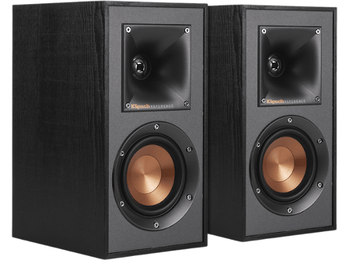

Altaveus Klipsch R-41M
| Tipus de dispositiu | Altaveus |
|---|---|
| Transmissió | Per fil |
| Subwoofer | Sí (woofer IMG de coure de 4’’) |
| Connectivitat | Directament a un sistema de so |
| Tipus d'amplificació | Passiva |
| Potència d'amplificació | 50W/200W |
| Color del producte | Negre |
| Resposta de freqüència | 68Hz - 21kHz +/- 3dB |
- Els altaveus de prestatgeria R-41M ofereixen la màxima versatilitat sense sacrificar rendiment, sent una solució petita però elegant.
- Dissenyats com a altaveus principals per a una sala reduïda o com a so surround en un sistema d'altaveus Reference, aquests altaveus són l'elecció ideal per al seu sistema de cinema a casa.
- Els cons de woofers IMG (grafit modelat per injecció) mantenen una rigidesa excepcional –garantint una resposta de freqüència marcadament baixa, mentre que la seva lleugera construcció minimitza la distorsió i la ruptura del con.
- Els cargols exposats i les fines reixetes magnètiques els confereixen als altaveus un aspecte modern i refinat.